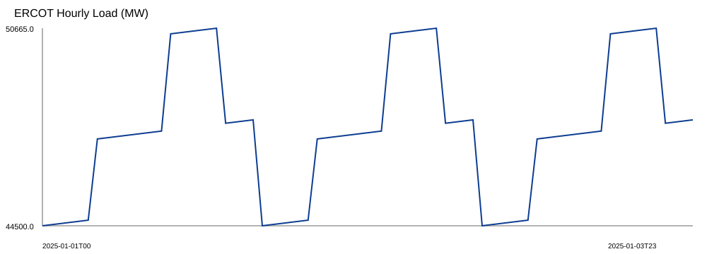
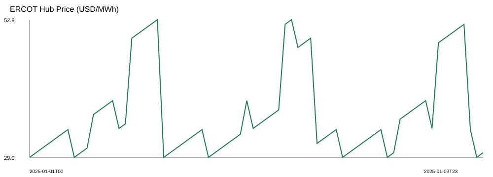
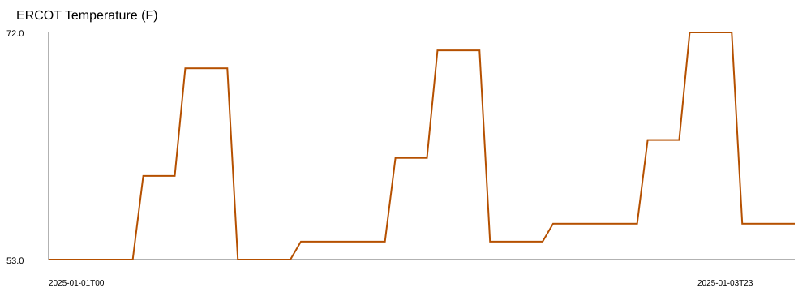
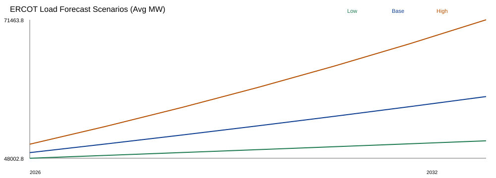
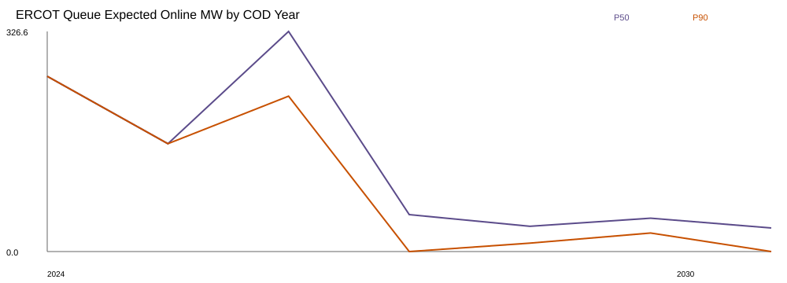

Key Metrics — ERCOT (HB_NORTH)
Base scenario outputs from the processed analytics pipeline.
Pipeline Outputs
Charts generated from the reproducible pipeline — open the dashboard for interactive controls.
Hourly Load (MW)

Hub Price (USD/MWh)

Temperature (°F)

Load Forecast Scenarios

Queue Expected Online MW

Finance Sensitivity

Analytics Modules
Four modules built in sequence, each producing validated analytical outputs.
Load & Demand Forecasting
Baseline regional load model with temperature sensitivity, day-of-week, and seasonality. Data center growth overlay with Low / Base / High scenarios to 2030.
Interconnection Queue
Normalized ISO queue data with completion-probability modeling. Expected online MW by year per technology — P50 / P90 buildout trajectories for solar, wind, and storage.
Market Metrics
Generation-weighted capture prices for solar and wind, congestion proxy (basis deviation), negative-price hours, and curtailment indicators.
Project Finance
Transparent solar pro-forma with merchant and contracted structures. Outputs: LCOE, NPV, IRR, DSCR, and a full scenario matrix across load × supply × price assumptions.
Base Solar Finance Case — Contracted, 100 MW
Stylized pro-forma under base price and base capex assumptions. Not an investment recommendation.
| Metric | Value | Notes |
|---|---|---|
| NPV | −32.04 MUSD | 10% WACC, 20-yr project life |
| After-tax NPV | −35.53 MUSD | 25% corporate tax rate proxy |
| IRR | 0.6% | Contracted base scenario |
| Min DSCR | 1.07× | 60% debt, 6% rate, 15-yr tenor |
| LCOE | 60.16 USD/MWh | 1,150 USD/kW capex, 18 USD/kW-yr opex |
| Year 1 Revenue | 10.11 MUSD | Capture price × generation × PPA premium |
Pipeline Architecture
Layered, reproducible data flow — one command rebuilds all outputs.
All transforms are reproducible via make all. Schema contracts, QA checks, and ingestion
manifests are enforced at each stage. Dependency versions are pinned in requirements-lock.txt.
Documentation
Method notes, assumptions, and data dictionary for full transparency.
Note: .md links open the raw Markdown on GitHub Pages. For formatted views, browse the
docs/ folder on GitHub.